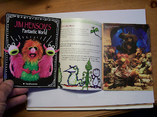
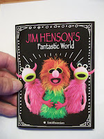

Henson's Fantastic World
10/26/2010
"As children, we all live in a world
of imagination, of Fantasy,
and for some of us that world
of make-believe continues into
adulthood."
Jim Henson (1936-1990)
* * * * *

When the Jim Henson traveling museum, "Fantastic World" (organized by The Jim Henson Legacy and the Smithsonian Traveling Exibitition Service), made a stop in the Northeast, Al Getler picked up four copies of the colorful 12 page fold-out photo programs to be given away on this blog. Filled with photos, Henson facts and history, the pages give a glimpse into how a one-man enterprise, begun in the 1950's, grew into an internationally acclaimed phenomenon. Jim's work is known in dozens of languages in more than 100 countries.The program includes excerpts for a 1982 interview with Jim. As a figure maker, I was drawn in particular to this exchange:
Q:" Once you create a puppet, isn't it that much easier to make a duplicate of it?"
Jim: "Strangely, no, with major characters in particular. Any time we have to duplicate Ernie and Bert, for instance, we all cringe because they're very, very difficult to duplicate. Much harder to do than the first ones. There's an incredible subtlety to the placement of the eyes and the planes of the shape that they're made of, and if any of those things are off just slightly, the character doesn't look the same."
How true!
A
{kind=link}

ll four of these Jim Henson Exhibit Programs are being awarded today, one each to: Rose Baggerly, Marcelo Melison, Johnnie Kelly, and M. M. Towne.